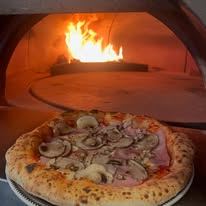

Notre histoire,
une aventure familiale
Père et fils, un rêve devenu réalité : proposer à Mérignac des pizzas au feu de bois préparées avec des produits frais, dans un lieu chaleureux et contemporain.

Père et fils, un rêve devenu réalité
Après plusieurs années de galère et de chômage, un rêve de jeunesse a ressurgi : ouvrir une pizzeria familiale, sincère et ambitieuse. Ce projet, longtemps resté dans un coin de la tête, a fini par prendre vie avec une conviction simple : proposer une vraie pizza au feu de bois, généreuse, soignée et accessible.
L'aventure a d'abord grandi du côté du Haillan, puis s'est concrétisée à Mérignac, à deux pas de Bordeaux et de l'aéroport Bordeaux-Mérignac. Avec le temps, l'idée s'est affinée, l'expérience s'est construite, et Fiamma Pizza est devenu un projet familial porté par l'envie de bien faire, de recevoir et de progresser.
Aujourd'hui, Fiamma Pizza accueille ses clients dans un cadre chaleureux, avec un nouveau décor contemporain, des places assises toute l'année et une cuisine pensée pour donner envie de revenir. Que vous veniez de Pessac, Le Haillan, Saint-Médard-en-Jalles, Eysines, Le Bouscat, Caudéran ou du centre de Bordeaux, notre pizzeria artisanale est facilement accessible depuis la rocade.
"Un rêve familial, une passion du feu de bois, et l'envie de proposer une pizza qui rassemble."
Chaque service est une nouvelle étape. Derrière chaque pizza, il y a le feu de bois, une sélection soignée de produits, du travail, de l'exigence et l'envie de faire plaisir - sur place, à emporter, ou autour d'un verre dans une ambiance décontractée et chic.
Trois repères qui racontent Fiamma
La pizzeria artisanale que nous avons bâtie à Mérignac repose sur des choix simples : le feu de bois, des produits frais, et un vrai travail artisanal au quotidien.
Le feu de bois
Le feu de bois fait partie de l'identité de Fiamma Pizza. Il donne à chaque pizza son caractère : une cuisson vive, une pâte bien développée et une signature artisanale qui se ressent dès la première bouchée.
La sélection des produits
Nous travaillons des produits frais et une sélection soignée d'ingrédients italiens pour construire des recettes généreuses, équilibrées et pleines de goût. Chaque produit est là pour servir la pizza, pas pour faire joli.
Le geste artisanal
Chez Fiamma Pizza, l'expérience, la passion et l'amour de la pizza prennent du sens dans le geste. La pâte est travaillée avec attention, les cuissons sont suivies de près, et chaque service est l'occasion de faire encore mieux.
Une carte pensée pour donner envie de revenir
Au fil du temps, Fiamma Pizza a fait évoluer sa cuisine pour proposer des pizzas napolitaines raffinées, préparées avec des produits frais, un vrai souci du détail et une identité culinaire plus affirmée.
Notre objectif n'est pas d'en faire trop. Il est de proposer des recettes cohérentes, généreuses et gourmandes, dans lesquelles chaque ingrédient trouve sa place et chaque cuisson est respectée.
- Produits fraisPour des recettes plus nettes et plus gourmandes
- Sélection d'ingrédients italiensPour rester fidèle à l'identité de la maison
- Feu de boisPour la cuisson et la signature Fiamma
- Pizzas napolitainesPour une carte raffinée et généreuse
- Places assises toute l'annéePour profiter du lieu sur place
- À emporterPour un service simple et pratique
- Bar & cocktailsPour prolonger l'expérience
- Ambiance décontractée et chicPour venir aussi bien entre amis qu'en famille
Plus de 230 avis clients authentiques
Cuisson à haute température pour une pâte parfaite
Pâte maison fermentée lentement pour des saveurs développées
Aucun produit surgelé, jamais
Plébiscité par les clients sur TheFork
Un nouveau lieu, un nouvel élan
À Mérignac Capeyron, Fiamma Pizza accueille aujourd'hui ses clients dans un lieu plus abouti, avec un décor contemporain, une salle agréable et des places assises disponibles toute l'année.
Situés au 82 avenue des Frères Robinson à Mérignac, nous recevons aussi bien les habitués du quartier que les visiteurs de passage, les familles, les groupes d'amis, les collègues le midi ou les couples le soir. Le restaurant est accessible aux personnes à mobilité réduite, dispose d'un espace bar cocktails et offre le WiFi.
"Aujourd'hui, nous proposons des pizzas napolitaines raffinées, élaborées avec des produits frais, dans un nouveau décor contemporain."
Vous cherchez une pizzeria à Mérignac, à Pessac ou dans l'ouest bordelais qui propose un vrai moment de cuisine au feu de bois, sur place ou à emporter ? Que vous soyez près de l'aéroport de Bordeaux, du Haillan, de Saint-Médard-en-Jalles ou de Gradignan, Fiamma Pizza est facile d'accès et pensé pour vous accueillir toute l'année.

Les incontournables de la carte
Découvrez nos créations les plus appréciées, préparées avec des produits soigneusement sélectionnés et cuites au feu de bois dans notre four traditionnel à Mérignac.
Tartufata
Crème de truffe, mozzarella, stracciatella, copeaux de truffe fraîche, noisettes truffées. Une pizza truffe d'exception, signature de notre carte à Mérignac.
19,50 €Mortadella
Crème fraîche, mozzarella, mortadelle, pesto de pistache, éclats de pistaches, burrata, basilic. Un équilibre parfait entre douceur et caractère.
17,70 €Parma
Pesto, mozzarella, jambon sec italien, tomates confites, burrata, copeaux de parmesan, roquette. La générosité italienne dans chaque bouchée.
18,00 €Dolce Vita
Tomate, mozzarella, bresaola IGP, stracciatella, pesto de roquette maison. L'alliance subtile de la charcuterie italienne et du crémeux de la stracciatella.
17,70 €Tout ce que vous voulez savoir
Fiamma Pizza est situé au 82 Avenue des Frères Robinson, 33700 Mérignac, à quelques minutes du centre de Bordeaux et facilement accessible depuis la rocade. Parking disponible à proximité.
Oui, Fiamma Pizza propose la livraison à domicile via Uber Eats sur Mérignac et les communes voisines de Bordeaux Métropole. Vous pouvez commander directement depuis l'application Uber Eats.
Fiamma Pizza est ouvert du mardi au jeudi de 11h30 à 14h00 et de 18h00 à 21h30, et le vendredi et samedi de 11h30 à 14h00 et de 18h00 à 22h00. Le restaurant est fermé le dimanche et le lundi.
Oui, sans exception. Toutes les pizzas chez Fiamma Pizza sont cuites dans notre four à bois traditionnel, à 400°C, pour une pâte légèrement croustillante, dorée et pleine de saveur. C'est la seule façon de faire une vraie pizza.
La réservation est vivement conseillée, notamment le vendredi soir et le samedi. Appelez-nous au 05 56 42 51 37. Pour les groupes de plus de 8 personnes, merci de réserver à l'avance.
Oui, notre carte propose plusieurs pizzas végétariennes, dont la Vegetariana (choux rouge, roquette, tomates cerises, champignons, courgettes, parmesan) et la Margherita classique. N'hésitez pas à demander des adaptations.
Fiamma Pizza est situé à Mérignac, à quelques minutes de l'aéroport Bordeaux-Mérignac. Nous proposons des pizzas napolitaines cuites au feu de bois, idéales avant ou après un vol.
Oui, Fiamma Pizza propose la privatisation de sa salle pour vos événements : anniversaires, repas d'entreprise, célébrations familiales. Contactez-nous au 05 56 42 51 37 pour organiser votre soirée.
Nous travaillons des produits frais et une sélection d'ingrédients qui valorisent chaque recette : mozzarella, stracciatella, burrata, gorgonzola, parmigiano reggiano et rocamadour AOP. Aucun produit surgelé.
Au cœur de Mérignac, à deux pas de l'aéroport
Fiamma Pizza est idéalement situé à Mérignac, à quelques minutes seulement de l'aéroport Bordeaux-Mérignac. Que vous veniez de Pessac, Le Haillan, Eysines, Saint-Médard-en-Jalles, Le Bouscat, Caudéran, Martignas-sur-Jalle ou Gradignan, notre pizzeria artisanale vous accueille dans un cadre chaleureux et convivial.
Facilement accessible depuis la rocade (sortie 9), avec un parking à proximité, Fiamma Pizza est le lieu parfait pour une pause gourmande dans l'ouest bordelais. Habitants de Bordeaux Métropole, voyageurs en transit à l'aéroport ou familles des communes voisines comme Blanquefort, Bruges ou Talence - notre restaurant dispose de tous les équipements pour vous recevoir dans les meilleures conditions.
Envie de privatiser notre salle pour un anniversaire, un repas d'entreprise ou une célébration familiale ? Contactez-nous pour organiser votre événement.
Prêt à vivre l'expérience Fiamma ?
Réservez votre table dès maintenant ou parcourez notre carte pour composer votre commande idéale. On vous attend à Mérignac.